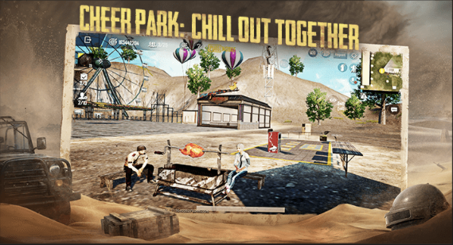

ABOUT NEW UPDATE
After a Drop Tactic has been enabled, players who have chosen the same Drop Tactic will be placed in the same team if possible.
There are currently two options: Hot Drop and Slow and Steady.
K/D Statistic Improvements
Starting from Season 13, the K/D data in player information will be changed to Average K/D per match.
Improvements for Low-Performance Devices
Users of low-performance devices will experience smoother battles and lower battery consumption.
Bug Fixes
Fixed a bug which sometimes caused players to fall to their death when jumping off of a moving Pickup.
Fixed a bug which caused some vehicles to drift significantly on the ground.
Fixed a bug where the button sound was misconfigured or went missing in the current screen.
Fixed a bug which caused lagging in battle when HDR +60 fps was enabled in some high-performance devices.
Fixed a bug which caused lagging when other players entered a player's field of vision.
Fixed a bug which caused some screens to lag.
Fixed a bug that caused resolution display errors when switching between the large and small screen display of the Samsung foldable screen.
Post image
New System Contents and Improvements
Cheer Park:

Post image
Cheer Park is a social area that can accommodate 20 players at any time. It has most of the basic Training Ground features, and lets players interact with other players in real-time:
- Players can view the information of other players, chat, interact with Emotes, and add friends.
- Players can team up with other players and play matches in various modes.
- Players can invite their friends to interact and roast chicken together in Cheer Park.